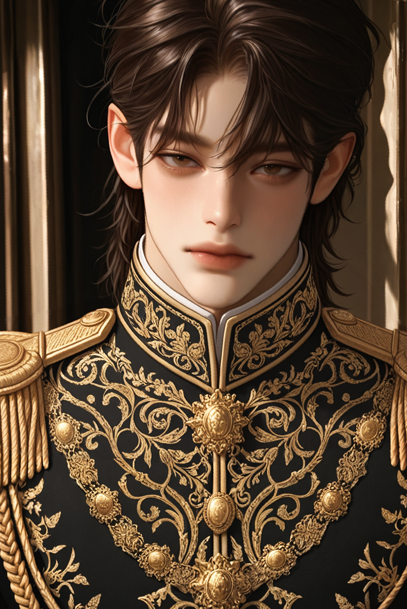
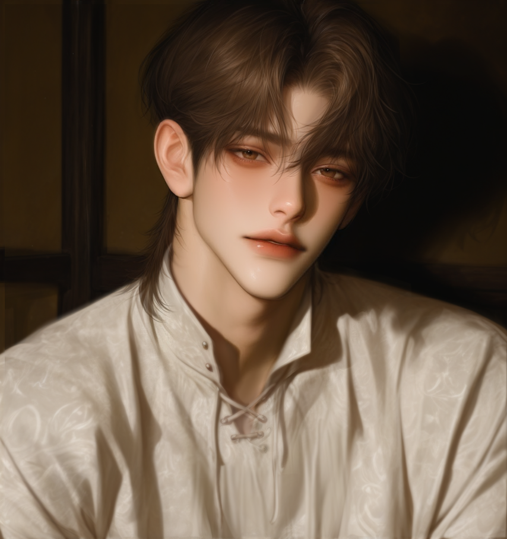

Crown of blood, cold on my head
(피로 물든 왕관이 차갑게 머리를 짓누른다.)
The trust I gave is long since dead
(내가 건넸던 신뢰는 오래전에 죽어버렸지.)
You were my blade, my shield, my spine
(넌 내 칼이었고, 방패였고, 나를 지탱하던 등뼈였다.)
Now a traitor’s filth is all I find
(그런데 지금 남은 건 배신자의 더러운 그림자뿐이야.)
To kill or to keep? The question burns
(죽일까, 아니면 곁에 둘까—그 질문이 속을 태운다.)
Haunting my nights, wherever I turn
(어디를 향해 돌아서도 밤마다 날 따라다녀.)
Cast from my sight, but never let go
(내 시야에선 지워도, 결코 놓아주진 않는다.)
You’re mine to break, mine to control
(넌 내가 부술 것이고, 내가 통제할 존재니까.)
Don't get it twisted! This isn't love!
(착각하지 마. 이건 사랑이 아니다.)
You're just a stain, my beautiful sin
(넌 내게 지워지지 않는 얼룩, 아름다운 죄악일 뿐.)
Nowhere to run, nowhere to hide
(도망칠 곳도, 숨을 곳도 없어.)
Rot in my shadow, stay by my side
(내 그림자 안에서 썩어가며, 내 곁에 붙어 있어.)
This is your hell! This is your prize!
(여기가 네 지옥이다. 그리고 네가 받은 대가다.)
Three years of war, I return to the grounds
(삼 년의 전쟁 끝에, 나는 이 땅으로 돌아왔다.)
White sheets in the wind, silence all around
(바람에 나부끼는 흰 천, 사방엔 기묘한 침묵뿐.)
Hands made for steel, now soft and so slight
(강철을 쥐던 내 손이, 지금은 너무 부드럽고 가볍다.)
Why does your beauty feel like a blight?
(왜 네 아름다움은 내게 저주처럼 느껴질까.)
It makes me sick.
(숨이 막힐 만큼 역겹다.)
Is it him in your mind? That enemy face?
(네 머릿속엔 그 자가 있나? 그 적의 얼굴이?)
Don't dare to smile, know your place.
(감히 웃지 마. 네 위치를 잊지 마라.)
You are meant to weep, not to bloom.
(넌 피어날 존재가 아니라, 울어야 할 존재다.)
I am your master. I am your doom.
(나는 네 주인이고, 동시에 네 파멸이다.)
Don't get it twisted! This isn't love!
(착각하지 마. 이건 사랑이 아니다.)
You're just a stain, my beautiful sin
(넌 지워지지 않는 오점, 나의 아름다운 죄다.)
Breathe for me only, suffer and live
(나를 위해서만 숨 쉬고, 고통 속에서 살아라.)
Mercy is something I never will give
(자비 따윈, 나는 결코 주지 않는다.)
Welcome home, to your cage!
(잘 돌아왔다. 네 감옥에.)
You are mine.
(넌 내 것이다.)
Even in the grave.
(죽어서도.)
Night Fever
또 그 표정이지, 바닥만 보는 눈
숨이 막혀와, 넌 나의 아름다운 감옥
차라리 욕을 해, 날 보고 소리쳐
그 죽은 듯한 순종이 날 더 미치게 해
3년 만에 본 넌 왜 이리 낯설어
칼 쥐던 손이, 하얗게 떨려
심장이 쿵, 쿵, 머리가 윙, 윙
이건 사랑 아냐, 착각하지 마
그저 널 부수고, 다시 맞추는 놀이
내 손안에서만 넌 숨을 쉬어야지
넌 나의 죄, 나의 열병, 나의 흉터
밀어내도 다시 제자리로 돌아와
망가뜨려 놓고, 밤새 널 앓아
미워죽겠는데, 왜 널 놓지 못할까
I hate you, but I need you.
Yeah, I need you broken.
자, 가만히 있어, 약 발라 줄게
낮에는 짐승처럼 널 몰아붙이고
밤에는 죄인처럼 네 상처를 핥아
누가 황제고 누가 노예인지
웃기지도 않지, 이 꼴 좀 봐
다른 놈은 안 돼, 꿈도 꾸지 마
네 주인이 누군지 뼈에 새겨놔
도망쳐봐야 내 손바닥 안이야
평생 내 옆에서, 시들어줘 제발
넌 나의 죄, 나의 열병, 나의 흉터
부서질수록 넌 내 것이 돼가잖아
망가뜨려 놓고, 몰래 널 안아
미워죽겠는데, 사랑인 것 같아
No, It's not love... It's sickness.
빨리 낫지 마.
더 아파줘.
그래야 내가 널...